산업안전기사 (2019-04-27 기출문제)
1과목: 안전관리론
1. 연천인율 45인 사업장의 도수율은 얼마인가?
- 10.8
- 18.75
- 108
- 187.5
(정답률: 71%)

2. 다음 중 산업안전보건법상 안전인증대상 기계ㆍ기구 등의 안전인증 표시로 옳은 것은?
(정답률: 86%)
3. 불안전 상태와 불안전 행동을 제거하는 안전관리의 시책에는 적극적인 대책과 소극적인 대책이 있다. 다음 중 소극적인 대책에 해당하는 것은?
- 보호구의 사용
- 위험공정의 배제
- 위험물질의 격리 및 대체
- 위험성평가를 통한 작업환경 개선
(정답률: 87%)
4. 안전조직 중에서 라인-스탭(Line-Staff) 조직의 특징으로 옳지 않은 것은?
- 라인형과 스탭형의 장점을 취한 절충식 조직형태이다.
- 중규모 사업장(100명 이상 ~ 500명 미만)에 적합하다.
- 라인의 관리, 감독자에게도 안전에 관한 책임과 권한이 부여된다.
- 안전 활동과 생산업무가 분리될 가능성이 낮기 때문에 균형을 유지할 수 있다.
(정답률: 88%)
5. 다음 중 브레인스토밍(Brain Storming)의 4원칙을 올바르게 나열한 것은?
- 자유분방, 비판금지, 대량발언, 수정발언
- 비판자유, 소량발언, 자유분방, 수정발언
- 대량발언, 비판자유, 자유분방, 수정발언
- 소량발언, 자유분방, 비판금지, 수정발언
(정답률: 89%)
6. 매슬로우의 욕구단계이론 중 자기의 잠재력을 최대한 살리고 자기가 하고 싶었던 일을 실현하려는 인간의 욕구에 해당하는 것은?
- 생리적 욕구
- 사회적 욕구
- 자아실현의 욕구
- 학생의 학습과 과정의 평가를 과학적으로 할 수 있다.
(정답률: 92%)
7. 수업매채별 장ㆍ단점 중 ‘컴퓨터 수업(computer assisted instruction)'의 장점으로 옳지 않은 것은?
- 개인차를 최대한 고려할 수 있다.
- 학습자가 능동적으로 참여하고, 실패율이 낮다.
- 교사와 학습자가 시간을 효과적으로 이용할 수 없다.
- 학생의 학습과 과정의 평가를 과학적으로 할 수 있다.
(정답률: 71%)
8. 산업안전보건법령상 산업안전보건위원회의 구성에서 사용자위원 구성원이 아닌 것은? (단, 해당 위원이 사업장에 선임이 되어 있는 경우에 한한다.)
- 안전관리자
- 보건관리자
- 산업보건의
- 명예산업안전감독관
(정답률: 88%)
9. 다음 중 상황성 누발자의 재해유발원인으로 옳지 않은 것은?
- 작업의 난이성
- 기계설비의 결함
- 도덕성의 결여
- 심신의 근심
(정답률: 82%)
10. 다음 중 안전ㆍ보건교육의 단계별 교육과정 순서로 옳은 것은?
- 안전 태도교육 → 안전 지식교육 → 안전 기능교육
- 안전 지식교육 → 안전 기능교육 → 안전 태도교육
- 안전 기능교육 → 안전 지식교육 → 안전 태도교육
- 안전 자세교육 → 안전 지식교육 → 안전 기능교육
(정답률: 75%)
11. 산업안전보건법령상 안전모의 시험성능기준 항목으로 옳지 않은 것은?
- 내열성
- 턱끈풀림
- 내관통성
- 충격흡수성
(정답률: 75%)
12. 재해통계에 있어 강도율이 2.0인 경우에 대한 설명으로 옳은 것은?
- 재해로 인해 전체 작업비용의 2.0%에 해당하는 손실이 발생하였다.
- 근로자 100명당 2.0건의 재해가 발생하였다.
- 근로시간 1000시간당 2.0건의 재해가 발생하였다.
- 근로시간 1000시간당 2.0일의 근로손실일수가 발생하였다.
(정답률: 80%)
13. 다음 중 산업안전심리의 5대 요소에 포함되지 않는 것은?
- 습관
- 동기
- 감정
- 지능
(정답률: 69%)
14. 교육훈련 방법 중 OJT(On the Job Training)의 특징으로 옳지 않은 것은?
- 동시에 다수의 근로자들을 조직적으로 훈련이 가능하다.
- 개개인에게 적절한 지도 훈련이 가능하다.
- 훈련효과에 의해 상호 신뢰 및 이해도가 높아진다.
- 직장의 실정에 맞게 실제적 훈련이 가능하다.
(정답률: 85%)
15. 기술교육의 형태 중 준 듀이(J.Dewey)의 사고과정 5단계에 해당하지 않는 것은?
- 추론한다.
- 시사를 받는다.
- 가설을 설정한다.
- 가슴으로 생각한다.
(정답률: 84%)
16. 허츠버그(Herzberg)의 일을 통한 동기부여 원칙으로 틀린 것은?
- 새롭고 어려운 업무의 부여
- 교육을 통한 간접적 정보제공
- 자기과업을 위한 작업자의 책임감 증대
- 작업자에게 불필요한 통제를 배제
(정답률: 53%)
17. 산업안전보건법상 환기가 극히 불량한 좁고 밀폐된 장소에서 용접작업을 하는 근로자 대상의 특별안전보건교육 교육내용에 해당하지 않는 것은? (단, 기타 안전ㆍ보건관리에 필요한 사항은 제외한다.)
- 환기설비에 관한 사항
- 작업환경 점검에 관한 사항
- 질식 시 응급조치에 관한 사항
- 화재예방 및 초기대응에 관한 사항
(정답률: 66%)
18. 다음의 무재해운동의 이념 중 “선취의 원칙”에 대한 설명으로 가장 적절한 것은?
- 사고의 잠재요인을 사후에 파악하는 것
- 근로자 전원이 일체감을 조성하여 참여하는 것
- 위험요소를 사전에 발견, 파악하여 재해를 예방 또는 방지하는 것
- 관리감독자 또는 경영층에서의 자발적 참여로 안전 활동을 촉진하는 것
(정답률: 90%)
19. 산업안전보건법령상 유기화합물용 방독마스크의 시험가스로 옳지 않은 것은?
- 이소부탄
- 시클로헥산
- 디메틸에테르
- 염소가스 또는 증기
(정답률: 83%)
20. 산업안전보건법령상 근로자 안전보건교육 중 작업내용 변경시의 교육을 할 때 일용근로자를 제외한 근로자의 교육시간으로 옳은 것은?
- 1시간 이상
- 2시간 이상
- 4시간 이상
- 8시간 이상
(정답률: 75%)
2과목: 인간공학 및 시스템안전공학
21. 화학설비에 대한 안정성 평가(safety assessment)에서 정량적 평가 항목이 아닌 것은?
- 습도
- 온도
- 압력
- 용량
(정답률: 64%)
22. 신체 부위의 운동에 대한 설명으로 틀린 것은?
- 굴곡(flexion)은 부위간의 각도가 증가하는 신체의 움직임을 의미한다.
- 외전(abduction)은 신체 중심선으로부터 이동하는 신체의 움직임을 의미한다.
- 내전(adduction)은 신체의 외부에서 중심선으로 이동하는 신체의 움직임을 의미한다.
- 외선(lateral rotation)은 신체의 중심선으로부터 회전하는 신체의 움직임을 의미한다.
(정답률: 59%)
23. n개의 요소를 가진 병렬 시스템에 있어 요소의 수명(MTTF)이 지수분포를 따를 경우 이 시스템의 수명을 구하는 식으로 맞는 것은?
- MTTF × n
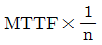
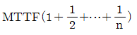
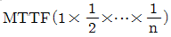
(정답률: 76%)
24. 인간 전달 함수(Human Transfer Function)의 결점이 아닌 것은?
- 입력의 협소성
- 시점적 제약성
- 정신운동의 묘사성
- 불충분한 직무 묘사
(정답률: 57%)
25. 고장형태와 영향분석(FMEA)에서 평가요소로 틀린 것은?
- 고장발생의 빈도
- 고장의 영향크기
- 고장방지의 가능성
- 기능적 고장 영향의 중요도
(정답률: 43%)
26. 결함수분석의 기대효과와 가장 관계가 먼 것은?
- 시스템의 결함 진단
- 시간에 따른 원인 분석
- 사고원인 규명의 간편화
- 사고원인 분석의 정량화
(정답률: 60%)
27. 인간공학에 대한 설명으로 틀린 것은?
- 인간이 사용하는 물건, 설비, 환경의 설계에 적용된다.
- 인간을 작업과 기계에 맞추는 설계 철학이 바탕이 된다.
- 인간 - 기계 시스템의 안전성과 편리성, 효율성을 높인다.
- 인간의 생리적, 심리적인 면에서의 특성이나 한계점을 고려한다.
(정답률: 83%)
28. 빨강, 노랑, 파랑의 3가지 색으로 구성된 교통 신호등이 있다. 신호등은 항상 3가지 색으로 구성된 교통 신호등이 있다. 신호등은 항상 3가지 색 중 하나가 켜지도록 되어 있다. 1시간 동안 조사한 결과, 파란등은 총 30분 동안, 빨간등과 노란등은 각각 총 15분 동안 켜진 것으로 나타났다. 이 신호등의 총 정보량은 몇 bit 인가?
- 0.5
- 0.75
- 1.0
- 1.5
(정답률: 43%)
29. 다음과 같은 실내 표면에서 일반적으로 추천반사율의 크기를 맞게 나열한 것은?
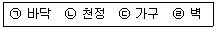
- ㉠＜㉣＜㉢＜㉡
- ㉣＜㉠＜㉡＜㉢
- ㉠＜㉢＜㉣＜㉡
- ㉣＜㉡＜㉠＜㉢
(정답률: 76%)
30. 어떤 결함수를 분석하여 minimal cut set을 구한 결과 다음과 같았다. 각 기본사상의 발생확률을 q1,i = 1, 2, 3라 할 때, 정상사상의 발생확률함수로 맞는 것은?
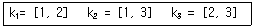
- q1q2 + q1q2 - q2q3
- q1q2 + q1q3 - q1q2
- q1q2 + q1q3 + q2q3 - q1q2q3
- q1q2 + q1q3 + q2q3 - 2q1q2q3
(정답률: 73%)
31. 산업안전보건법령에 따라 유해위험방지 계획서의 제출대상 사업은 해당 사업으로서 전기 계약용량이 얼마 이상이 사업인가?
- 150kW
- 200kW
- 300kW
- 500kW
(정답률: 83%)
32. 음량수준을 평가하는 척도와 관계없는 것은?
- HSI
- phon
- dB
- sone
(정답률: 86%)
33. 인간의 오류모형에서 “알고 있음에도 의도적으로 따르지 않거나 무시한 경우”를 무엇이라 하는가?
- 실수(Slip)
- 착오(Mistake)
- 건망증(Lapse)
- 위반(Violation)
(정답률: 84%)
34. 그림과 같이 7개의 부품으로 구성된 시스템의 신뢰도는 약 얼마인가? (단, 네모안의 숫자는 각 부품의 신뢰도이다.)
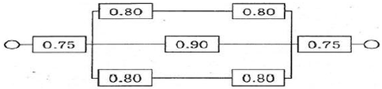
- 0.5552
- 0.5427
- 0.6234
- 0.9740
(정답률: 58%)
35. 소음방지 대책에 있어 가장 효과적인 방법은?
- 음원에 대한 대책
- 수음자에 대한 대책
- 전파경로에 대한 대책
- 거리감쇠와 지향성에 대한 대책
(정답률: 81%)
36. 정성적 표시장치의 설명으로 틀린 것은?
- 정성적 표시장치의 근본 자료 자체는 정량적인 것이다.
- 전력계에서와 같이 기계적 혹은 전자적으로 숫자가 표시된다.
- 색채 부호가 부적합한 경우에는 계기판 표시 구간을 형상 부호화하여 나타낸다.
- 연속적으로 변하는 변수의 대략적인 값이나 변화추세, 변화율 등을 알고자 할 때 사용된다.
(정답률: 64%)
37. FT도에 사용하는 기호에서 3개의 입력현상 중 임의의 시간에 2개가 발생하면 출력이 생기는 기호의 명칭은?
- 억제 게이트
- 조합 AND 게이트
- 배타적 OR 게이트
- 우선적 AND 게이트
(정답률: 74%)
38. 공정안전관리(process safety management: PSM)의 적용대상 사업장이 아닌 것은?
- 복합비료 제조업
- 농약 원제 제조업
- 차량 등의 운송설비업
- 합성수지 및 기타 플라스틱물질 제조업
(정답률: 79%)
39. 아령을 사용하여 30분간 훈련한 후, 이두근의 근육 수축작용에 대한 전기적인 신호 데이터를 모았다. 이 데이터들을 이용하여 분석할 수 있는 것은 무엇인가?
- 근육의 질량과 밀도
- 근육의 활성도와 밀도
- 근육의 피로도와 크기
- 근육의 피로도와 활성도
(정답률: 79%)
40. 착석식 작업대의 높이 설계를 할 경우 고려해야 할 사항과 가장 관계가 먼 것은?
- 의자의 높이
- 대퇴여유
- 작업의 성격
- 작업대의 형태
(정답률: 56%)
3과목: 기계위험방지기술
41. 컨베이어 방호장치에 대한 설명으로 맞는 것은?
- 역전방지장치에 롤러식, 라쳇식, 권과방지식, 전기브레이크식 등이 있다.
- 작업자가 임의로 작업을 중단할 수 없도록 비상정지장치를 부착하지 않는다.
- 구동부 측면에 로울러 안내가이드 등의 이탈방지장치를 설치한다.
- 로울러컨베이어의 로울 사이에 방호판을 설지할 때 로울과의 최대간격은 8mm이다.
(정답률: 59%)
42. 가스 용접에 이용되는 아세틸렌가스 용기의 색상으로 옳은 것은?
- 녹색
- 회색
- 황색
- 청색
(정답률: 67%)
43. 로울러가 맞물림점의 전방에 개구부의 간격을 30MM로 하여 가드를 설치하고자 한다. 가드의 설치 위치는 맞물림점에서 적어도 얼마의 간격을 유지하여야 하는가?
- 154mm
- 160mm
- 166mm
- 172mm
(정답률: 53%)
44. 비파괴시험의 종류가 아닌 것은?
- 자분 탐상시험
- 침투 탐상시험
- 와류 탐상시험
- 샤르피 충격시험
(정답률: 84%)
45. 소음에 관한 사항으로 틀린 것은?
- 소음에는 익숙해지기 쉽다.
- 소음계는 소음에 한하여 계측할 수 있다.
- 소음의 피해는 정신적, 심리적인 것이 주가 된다.
- 소음이란 귀에 불쾌한 음이나 생활을 방해하는 음을 통틀어 말한다.
(정답률: 61%)
46. 와이어 로프의 꼬임에 관한 설명으로 틀린 것은?
- 보통꼬임에는 S꼬임이나 Z꼬임이 있다.
- 보통꼬임은 스트랜드의 꼬임방향과 로프의 꼬임방향이 반대로 된 것을 말한다.
- 랭꼬임은 로프의 끝이 자유로이 회전하는 경우나 킹크가 생기기 쉬운 곳에 적당하다.
- 랭꼬임은 보통꼬임에 비하여 마모에 대한 저항성이 우수하다.
(정답률: 61%)
47. 구내운반차의 제동장치 준수사항에 대한 설명으로 틀린 것은?
- 조명이 없는 장소에서 작업 시 전조등과 후미등을 갖출 것
- 운전석이 차 실내에 있는 것은 좌우에 한 개씩 방향지시기를 갖출 것
- 핸들의 중심에서 차체 바깥 측까지의 거리가 70센티미터 이상일 것
- 주행을 제동하거나 정지상태를 유지하기 위하여 유효한 제동장치를 갖출 것
(정답률: 83%)
48. 프레스의 방호장치 중 광전자식 방호장치에 관한 설명으로 틀린 것은?
- 연속 운전작업에 사용할 수 있다.
- 핀클러치 구조의 프레스에 사용할 수 있다.
- 기계적 고장에 의한 2차 낙하에는 효과가 없다.
- 시계를 차단하지 않기 때문에 작업에 지장을 주지 않는다.
(정답률: 55%)
49. 다음 용접 중 불꽃 온도가 가장 높은 것은?
- 산소-메탄 용접
- 산소-수소 용접
- 산소-프로판 용접
- 산소-아세틸렌 용접
(정답률: 73%)
50. 다음 중 선반 작업 시 지켜야 할 안전수칙으로 거리가 먼 것은?
- 작업 중 절삭칩이 눈에 들어가지 않도록 보안경을 착용한다.
- 공작물 세팅에 필요한 공구는 세팅이 끝난 후 바로 제거한다.
- 상의의 옷자락은 안으로 넣고, 끈을 이용하여 소맷자락을 묶어 작업을 준비한다.
- 공작물은 전원스위치를 끄고 바이트를 충분히 멀리 위치시킨 후 고정한다.
(정답률: 63%)
51. 기계설비 구조의 안전화 중 가공결함 방지를 위해 고려할 사항이 아닌 것은?
- 안전율
- 열처리
- 가공경화
- 응력집중
(정답률: 51%)
52. 회전수가 300rpm, 연삭숫돌의 지름이 200mm일 때 숫돌의 원주 속도는 약 몇 m/min인가?
- 60.0
- 94.2
- 150.0
- 188.5
(정답률: 71%)
53. 일반적으로 장갑을 착용해야 하는 작업은?
- 드릴작업
- 밀링작업
- 선반작업
- 전기용접작업
(정답률: 85%)
54. 산업용 로봇에 사용되는 안전 매트의 종류 및 일반구조에 관한 설명으로 틀린 것은?
- 단선 경보장치가 부착되어 있어야 한다.
- 감응시간을 조절하는 장치가 부착되어 있어야 한다.
- 감응도 조절장치가 있는 경우 봉인되어 있어야 한다.
- 안전 매트의 종류는 연결사용 가능여부에 따라 단일 감지기와 복합 감지기가 있다.
(정답률: 53%)
55. 지게차의 방호장치인 헤드가드에 대한 설명으로 맞는 것은?(관련 규정 개정전 문제로 여기서는 기존 정답인 1번을 누르면 정답 처리됩니다. 자세한 내용은 해설을 참고하세요.)
- 상부틀의 각 개구의 폭 또는 길이는 16센티미터 미만일 것
- 운전자가 앉아서 조작하는 방식의 지게차의 경우에는 운전자의 좌석 윗면에서 헤드가드의 상부틀 아랫면까지의 높이는 1.5미터 이상일 것
- 지게차에는 최대하중의 2배(5톤을 넘는 값에 대해서는 5톤으로 한다.)에 해당하는 등분포정하중에 견딜 수 있는 강도의 헤드가드를 설치하여야 한다.
- 운전자가 서서 조작하는 방식의 지게차의 경우에는 운전석의 바닥면에서 헤드가드의 상부틀 하면까지의 높이는 1.8미터 이상일 것
(정답률: 74%)
56. 프레스기에 설치하는 방호장치에 관한 사항으로 틀린 것은?
- 수인식 방호장치의 수인끈 재료는 합성섬유로 직경이 4mm 이상이어야 한다.
- 양수조작식 방호장치는 1행정마다 누름버튼에서 양손을 떼지 않으면 다음 작업의 동작을 할 수 없는 구조이어야 한다.
- 광전자식 방호장치는 정상동작표시램프는 적색, 위험표시램프는 녹색으로 하며, 쉽게 근로자가 볼 수 있는 곳에 설치해야 한다.
- 손쳐내기식 방호장치는 슬라이드 하행정거리의 3/4위치에서 손을 완전히 밀어내야 한다.
(정답률: 81%)
57. 프레스 금형부착, 수리 작업 등의 경우 슬라이드의 낙하를 방지하기 위하여 설치하는 것은?
- 슈트
- 키이록
- 안전블럭
- 스트리퍼
(정답률: 85%)
58. 회전 중인 연삭숫돌이 근로자에게 위험을 미칠 우려가 있을 시 덮개를 설치하여야 할 연삭숫돌의 최소 지름은?
- 지름이 5cm 이상인 것
- 지름이 10cm 이상인 것
- 지름이 15cm 이상인 것
- 지름이 20cm 이상인 것
(정답률: 59%)
59. 다음 중 기계설비의 정비ㆍ청소ㆍ급유ㆍ검사ㆍ수리 등의 작업 시 근로자가 위험해질 우려가 있는 경우 필요한 조치와 거리가 먼 것은?
- 근로자의 위험방지를 위하여 해당 기계를 정지시킨다.
- 작업지휘자를 배치하여 갑작스러운 기계가동에 대비한다.
- 기계 내부에 압출된 기체나 액체가 불시에 방출될 수 있는 경우에는 사전에 방출조치를 실시한다.
- 기계 운전을 정지한 경우에는 기동장치에 잠금장치를 하고 다른 작업자가 그 기계를 임의 조작할 수 있도록 열쇠를 찾기 쉬운 곳에 보관한다.
(정답률: 85%)
60. 아세틸렌 용접 시 역류를 방지하기 위하여 설치하여야 하는 것은?
- 안전기
- 청정기
- 발생기
- 유량기
(정답률: 79%)
4과목: 전기위험방지기술
61. 교류 아크용접기의 허용사용률(%)은? (단, 정격사용률은 10%, 2차 정격전류는 500A, 교류 아크용접기의 사용전류는 250A이다.)
- 30
- 40
- 50
- 60
(정답률: 57%)
62. 피뢰기의 여유도가 33%이고, 충격절연강도가 1000kV라고 할 때 피뢰기의 제한전압은 약 몇 kV인가?
- 852
- 752
- 652
- 552
(정답률: 57%)
63. 전력용 피뢰기에서 직렬 갭의 주된 사용 목적은?
- 방전내량을 크게 하고 장시간 사용 시 열화를 적게 하기 위하여
- 충격방전 개시전압을 높게 하기 위하여
- 이상전압 발생 시 신속히 대지로 방류함과 동시에 속류를 즉시 차단하기 위하여
- 충격파 침입시에 대지로 흐르는 방전전류를 크게 하여 제한전압을 낮게 하기 위하여
(정답률: 68%)
64. 방전전극에 약 7000V의 전압을 인가하면 공기가 전리되어 코로나 방전을 일으킴으로서 발생한 이온으로 대전체의 전하를 중화시키는 방법을 이용한 제전기는?
- 전압인가식 제전기
- 자기방전식 제전기
- 이온스프레이식 제전기
- 이온식 제전기
(정답률: 51%)
65. 전류가 흐르는 상태에서 단로기를 끊었을 때 여러 가지 파괴작용을 일으킨다. 다음 그림에서 유입차단기의 차단순위와 투입순위가 안전수칙에 가장 적합한 것은?
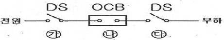
- 차단: ㉮→㉯→㉰, 투입: ㉮→㉯→㉰
- 차단: ㉯→㉰→㉮, 투입: ㉯→㉰→㉮
- 차단: ㉰→㉯→㉮, 투입: ㉰→㉮→㉯
- 차단: ㉯→㉰→㉮, 투입: ㉰→㉮→㉯
(정답률: 79%)
66. 내압 방폭구조에서 안전간극(safe gap)을 적게 하는 이유로 옳은 것은?
- 최소점화에너지를 높게 하기 위해
- 폭발화염이 외부로 전파되지 않도록 하기 위해
- 폭발압력에 견디고 파손되지 않도록 하기 위해
- 설치류가 전선 등을 훼손하지 않도록 하기 위해
(정답률: 64%)
67. 정전작업 시 작업 전 조치하여야 할 실무사항으로 틀린 것은?
- 잔류전하의 방전
- 단락 접지기구의 철거
- 검전기에 의한 정전확인
- 개로개폐기의 잠금 또는 표시
(정답률: 75%)
68. 인체감전보호용 누전차단기의 정격감도전류(mA)와 동작시간(초)의 최대값은?
- 10mA, 0.03초
- 20mA, 0.01초
- 30mA, 0.03초
- 50mA, 0.1초
(정답률: 80%)
69. 방폭전기기기의 온도등급의 기호는?
- E
- S
- T
- N
(정답률: 75%)
70. 산업안전보건기준에 관한 규칙에서 일반 작업장에 전기위험 방지 조치를 취하지 않아도 되는 전압은 몇 V 이하인가?
- 24
- 30
- 50
- 100
(정답률: 69%)
71. 폭발위험장소에서의 본질안전 방폭구조에 대한 설명으로 틀린 것은?
- 본질안전 방폭구조의 기본적 개념은 점화능력의 본질적 억제이다.
- 본질안전 방폭구조는 Exib는 fault에 대한 2중 안전보장으로 0종~2종 장소에 사용 할 수 있다.
- 이론적으로는 모든 전기기기를 본질안전 방폭구조를 적용할 수 있으나, 동력을 직접 사용하는 기기는 실제적으로 적용이 곤란하다.
- 온도, 압력, 액면유량 등의 검출용 측정기는 대표적인 본질 안전 방폭구조의 예이다.
(정답률: 62%)
72. 감전사고를 방지하기 위한 대책으로 틀린 것은?
- 전기설비에 대한 보호 접지
- 전기기기에 대한 정격 표시
- 전기설비에 대한 누전차단기 설치
- 충전부가 노출된 부분에는 절연 방호구 사용
(정답률: 80%)
73. 인체 피부의 전기저항에 영향을 주는 주요인자와 가장 거리가 먼 것은?
- 접촉면적
- 인가전압의 크기
- 통전경로
- 인가시간
(정답률: 39%)
74. 다음 중 전동기를 운전하고자 할 때 개폐기의 조작순서로 옳은 것은?
- 메인 스위치→분전반 스위치→전동기용 개폐기
- 분전반 스위치→메인 스위치→전동기용 개폐기
- 전동기용 개폐기→분전반 스위치→메인 스위치
- 분전반 스위치→전동기용 스위치→메인 스위치
(정답률: 61%)
75. 정전기 발생현상의 분류에 해당되지 않는 것은?
- 유체대전
- 마찰대전
- 박리대전
- 교반대전
(정답률: 55%)
76. 전기기기, 설비 및 전선로 등의 충전 유무 등을 확인하기 위한 장비는?
- 위상검출기
- 디스콘 스위치
- COS
- 저압 및 고압용 검전기
(정답률: 71%)
77. 다음 ( )안에 들어갈 내용으로 알맞은 것은?
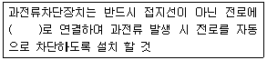
- 직렬
- 병렬
- 임시
- 직병렬
(정답률: 78%)
78. 일반 허용접촉 전압과 그 종별을 짝지은 것으로 틀린 것은?(관련 규정 개정전 문제로 여기서는 기존 정답인 1번을 누르면 정답 처리됩니다. 자세한 내용은 해설을 참고하세요.)
- 제1종 : 0.5V 이하
- 제2종 : 25V 이하
- 제3종 : 50V 이하
- 제4종 : 제한없음
(정답률: 74%)
79. 누전된 전동기에 인체가 접촉하여 500mA의 누전전류가 흘렀고 정격감도전류 500mA인 누전차단기가 동작하였다. 이때 인체전류를 약 10mA로 제한하기 위해서는 전동기 외함에 설치할 접지저항의 크기는 약 몇 Ω인가?(단, 인체저항은 500Ω이며, 다른 저항은 무시한다)
- 5
- 10
- 50
- 100
(정답률: 53%)
80. 내부에서 폭발하더라도 틈의 냉각 효과로 인하여 외부의 폭발성 가스에 착화될 우려가 없는 방폭구조는?
- 내압 방폭구조
- 유입 방폭구조
- 안전증 방폭구조
- 본질안전 방폭구조
(정답률: 72%)
5과목: 화학설비위험방지기술
81. 가연성 가스 혼합물을 구성하는 각 성분의 조성과 연소범위가 다음[표]와 같을 때 혼합 가스의 연소하한값은 약 몇 vol% 인가?
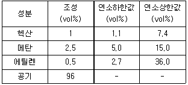
- 2.51
- 7.51
- 12.07
- 15.01
(정답률: 58%)
82. 다음 중 자연발화의 방지법으로 적절하지 않은 것은?
- 통풍을 잘 시킬 것
- 습도가 높은 곳에 저장할 것
- 저장실의 온도 상승을 피할 것
- 공기가 접촉되지 않도록 불활성물질 중에 저장할 것
(정답률: 70%)
83. 알루미늄분이 고온의 물과 반응하였을 때 생성되는 가스는?
- 산소
- 수소
- 메탄
- 에탄
(정답률: 71%)
84. 20℃, 1기압의 공기를 5기압으로 단열압축하면 공기의 온도는 약 몇 ℃가 되겠는가? (단, 공기의 비열비는 1.4이다.)
- 32
- 191
- 3⑤
- 464
(정답률: 62%)
85. 가연성물질을 취급하는 장치를 퍼지하고자 할 때 잘못된 것은?
- 대상물질의 물성을 파악한다.
- 사용하는 불활성가스의 물성을 파악한다.
- 퍼지용 가스를 가능한 한 빠른 속도로 단시간에 다량 송입한다.
- 장치내부를 세정한 후 퍼지용 가스를 송입한다.
(정답률: 82%)
86. 다음 물질이 물과 접촉하였을 때 위험성이 가장 낮은 것은?
- 과산화칼륨
- 나트륨
- 메틸리튬
- 이황화탄소
(정답률: 69%)
87. 폭발원인물질의 물리적 상태에 따라 구분할 때 기상폭발(gas explosion)에 해당되지 않는 것은?
- 분진폭발
- 응상폭발
- 분무폭발
- 가스폭발
(정답률: 70%)
88. 화염방지기의 설치에 관한 사항으로 ( )에 알맞은 것은?
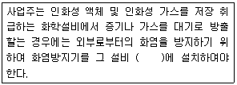
- 상단
- 하단
- 중앙
- 무게중심
(정답률: 83%)
89. 공정안전보고서에 포함하여야 할 세부 내용 중 공정안전자료의 세부내용이 아닌 것은?
- 유해ㆍ위험설비의 목록 및 사양
- 폭발위험장소 구분도 및 전기단선도
- 유해ㆍ위험물질에 대한 물질안전보건자료
- 설비점검ㆍ검사 및 보수계획, 유지계획 및 지침서
(정답률: 60%)
90. 산업안전보건법령상 화학설비와 화학설비의 부속설비를 구분할 때 화학설비에 해당하는 것은?
- 응축기ㆍ냉각기ㆍ가열기ㆍ증발기 등 열 교환기류
- 사이클론ㆍ백필터ㆍ전기집진기 등 분진처리설비
- 온도ㆍ압력ㆍ유량 등을 지시ㆍ기록 등을 하는 자동제어 관련설비
- 안전밸브ㆍ안전판ㆍ긴급차단 또는 방출밸브 등 비상조치 관련설비
(정답률: 71%)
91. 산업안전보건법령에 따라 사업주가 특수화학설비를 설치하는 때에 그 내부의 이상상태를 조기에 파악하기 위하여 설치하여야 하는 장치는?
- 자동경보장치
- 긴급차단장치
- 자동문개폐장치
- 스크러버개방장치
(정답률: 75%)
92. 다음 중 위험물과 그 소화방법이 잘못 연결된 것은?
- 염소산칼륨 - 다량의 물로 냉각소화
- 마그네슘 - 건조사 등에 의한 질식소화
- 칼륨 - 이산화탄소에 의한 질식소화
- 아세트알데히드 - 다량의 물에 의한 희석소화
(정답률: 33%)
93. 부탄(C4H10)의 연소에 필요한 최소산소농도(MOC)를 추정하여 계산하면 약 몇 vol%인가? (단, 부탄의 폭발하한계는 공기 중에서 1.6vol%이다.)
- 5.6
- 7.8
- 10.4
- 14.1
(정답률: 44%)
94. 다음 중 산화성 물질이 아닌 것은?
- KNO3
- NH4CIO3
- HNO3
- P4S3
(정답률: 67%)
95. 위험물안전관리법령상 제4류 위험물 중 제2석유류로 분류되는 물질은?
- 실린더유
- 휘발유
- 등유
- 중유
(정답률: 60%)
96. 산업안전보건법령상 사업주가 인화성액체 위험물을 액체상태로 저장하는 저장탱크를 설치하는 경우에는 위험물질이 누출되어 확산되는 것을 방지하기 위하여 무엇을 설치하여야 하는가?
- Flame arrester
- Ventstack
- 긴급방출장치
- 방유제
(정답률: 62%)
97. 다음 가스 중 가장 독성이 큰 것은?(오류 신고가 접수된 문제입니다. 반드시 정답과 해설을 확인하시기 바랍니다.)
- CO
- COCl2
- NH3
- H2
(정답률: 79%)
98. 건조설비를 사용하여 작업을 하는 경우에 폭발이나 화재를 예방하기 위하여 준수하여야 하는 사항으로 틀린 것은?
- 위험물 건조설비를 사용하는 경우에는 미리 내부를 청소하거나 환기 할 것
- 위험물 건조설비를 사용하여 가열건조하는 건조물은 쉽게 이탈되도록 할 것
- 고온으로 가열건조한 인화성 액체는 발화의 위험이 없는 온도로 냉각한 후에 격납시킬 것
- 바깥 면이 현저히 고온이 되는 건조설비에 가까운 장소에는 인화성 액체를 두지 않도록 할 것
(정답률: 84%)
99. 가솔린(휘발유)의 일반적인 연소범위에 가장 가까운 값은?
- 2.7~27.8 vol%
- 3.4~11.8 vol%
- 1.4~7.6 vol%
- 5.1~18.2 vol%
(정답률: 43%)
100. 가스 또는 분진 폭발 위험장소에 설치되는 건축물의 내화 구조를 설명한 것으로 틀린 것은?
- 건축물 기둥 및 보는 지상 1층까지 내화구조로 한다.
- 위험물 저장ㆍ취급용기의 지지대는 지상으로부터 지지대의 끝부분까지 내화구조로 한다.
- 건축물 주변에 자동소화설비를 설치한 경우 건축물 화재 시 1시간 이상 그 안전성을 유지한 경우는 내화구조로 하지 아니할 수 있다.
- 배관ㆍ전선관 등의 지지대는 지상으로부터 1단까지 내화구조로 한다.
(정답률: 73%)
6과목: 건설안전기술
101. 그물코의 크기가 5cm인 매듭 방망사의 폐기 시 인장강도 기준으로 옳은 것은?
- 200kg
- 100kg
- 60kg
- 30kg
(정답률: 61%)
102. 크레인 또는 데력에서 붐각도 및 작업반경별로 작용시킬 수 있는 최대하중에서 후크(Hook), 와이어로프 등 달기구의 중량을 공제한 하중은?
- 작업하중
- 정격하중
- 이동하중
- 적재하중
(정답률: 78%)
103. 차량계 하역운반기계를 사용하는 작업을 할 때 그 기계가 넘어지거나 굴러떨어짐으로 써 근로자에게 위험을 미칠 우려가 있는 경우에 우선적으로 조치하여야 할 사항과 가장 거리가 먼 것은?
- 해당 기계에 대한 유도자 배치
- 지반의 부동침하 방지 조치
- 갓길 붕괴 방지 조치
- 경보 장치 설치
(정답률: 60%)
104. 보통흙의 건조된 지반을 흙막이지보공 없이 굴착하려 할 때 굴착면의 기울기 기준으로 옳은 것은?(2021년 11월 19일 변경된 규정 적용됨)
- 1 : 1 ~ 1 : 1.5
- 1 : 0.5 ~ 1 : 1
- 1 : 1.0
- 1 : 5
(정답률: 64%)
1⑤. 차량계 하역운반기계등에 화물을 적재하는 경우에 준수하여야 할 사항으로 옳지 않은 것은?
- 하중이 한쪽으로 치우쳐서 효율적으로 적재되도록 할 것
- 구내운반차 또는 화물자동차의 경우 화물의 붕괴 또는 낙하에 의한 위험을 방지하기 위하여 화물에 로프를 거는 등 필요한 조치를 할 것
- 운전자의 시야를 가리지 않도록 화물을 적재할 것
- 최대적재량을 초과하지 않도록 할 것
(정답률: 86%)
106. 강관비계의 설치 기준으로 옳은 것은?
- 비계기둥의 간격은 띠장방향에서는 1.5m이상 1.8m 이하로 하고, 장선방향에서는 2.0m이하로 한다.
- 띠장 간격은 1.8m이하로 설치하되, 첫 번째 띠장은 지상으로부터 2m 이하의 위치에 설치한다.
- 비계기둥 간의 적재하중은 400kg을 초과하지 않도록 한다.
- 비계기둥의 제일 윗부분으로부터 21m되는 지점 밑부분의 비계기둥은 2개의 강관으로 묶어 세운다.
(정답률: 52%)
107. 다음 중 유해ㆍ위험방지계획서를 작성 및 제출하여야 하는 공사에 해당되지 않는 것은?
- 지상높이가 31m인 건축물의 건설ㆍ개조 또는 해체
- 최대 지간길이가 50m인 교량건설 등 공사
- 깊이가 9m인 굴착공사
- 터널 건설 등의 공사
(정답률: 83%)
108. 건립 중 강풍에 의한 풍압 등 외압에 대한 내력이 설계에 고려되었는지 확인하여야 하는 철골구조물의 기준으로 옳지 않은 것은?
- 높이 20m이상의 구조물
- 구조물의 폭과 높이의 비가 1:4 이상인 구조물
- 이음부가 공장 제작인 구조물
- 연면적당 철골량이 50kg/m2이하인 구조물
(정답률: 64%)
109. 흙막이 가시설 공사 시 사용되는 각 계측기 설치 목적으로 옳지 않은 것은?
- 지표침하계 - 지표면 침하량 측정
- 수위계 - 지반 내 지하수위의 변화 측정
- 하중계 - 상부 적재하중 변화 측정
- 지중경사계 - 지중의 수평 변위량 측정
(정답률: 63%)
110. 건설현장의 가설단계 및 계단참을 설치하는 경우 얼마 이상의 하중에 견딜 수 있는 강도를 가진 구조로 설치하여야 하는가?
- 200kg/m2
- 300kg/m2
- 400kg/m2
- 500kg/m2
(정답률: 52%)
111. 터널굴착작업을 하는 때 미리 작성하여야 하는 작업계획서에 포함되어야 할 사항이 아닌 것은?
- 굴착의 방법
- 암석의 분할방법
- 환기 또는 조명시설을 설치할 대에는 그 방법
- 터널지보공 및 복공의 시공방법과 용수의 처리방법
(정답률: 54%)
112. 근로자에게 작업 중 또는 통행 시 전락(轉洛)으로 인하여 근로자가 화상ㆍ질식 등의 위험에 처할 우려가 있는 케틀(kettle), 호퍼(hopper), 피트(pit) 등이 있는 경우에 그 위험을 방지하기 위하여 최소 높이 얼마 이상의 울타리를 설치하여야 하는가?
- 80cm 이상
- 85cm 이상
- 90cm 이상
- 95cm 이상
(정답률: 71%)
113. 거푸집 해체작업 시 유의사항으로 옳지 않은 것은?
- 일반적으로 수평부재의 거푸집은 연직부재의 거푸집보다 빨리 떼어낸다.
- 해체된 거푸집이나 각목 등에 박혀있는 못 또는 날카로운 돌출물은 즉시 제거하여야 한다.
- 상하 동시 작업은 원칙적으로 금지하여 부득이한 경우에는 긴밀히 연락을 위하여 작업을 하여야 한다.
- 거푸집 해체작업장 주위에는 관계자를 제외하고는 출입을 금지시켜야 한다.
(정답률: 62%)
114. 비계(달비계, 달대비계 및 말비계는 제외한다.)의 높이가 2m 이상인 작업장소에 설치하여야 하는 작업발판의 기준으로 옳지 않은 것은?
- 작업발판의 폭은 40cm 이상으로 하고, 발판재료 간의 틈은 3cm이하로 할 것
- 추락의 위험이 있는 장소에는 안전난간을 설치 할 것
- 작업발판의 지지물은 하중에 의하여 파괴될 우려가 없는 것을 사용할 것
- 작업발판재료는 뒤집히거나 떨어지지 않도록 1개 이상의 지지물에 연결하거나 고정시킬 것
(정답률: 81%)
115. 안전대의 종류는 사용구분에 따라 벨트식과 안전그네식으로 구분되는데 이 중 안전그네식에만 적용하는 것은?
- 추락방지대, 안전블록
- 1개 걸이용, U자 걸이용
- 1개 걸이용, 추락방지대
- U자 걸이용, 안전블록
(정답률: 51%)
116. 다음은 달비계 또는 높이 5m 이상의 비계를 조립ㆍ해체하거나 변경하는 작업을 하는 경우에 대한 내용이다. ( )에 알맞은 숫자는?
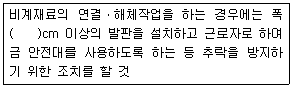
- 15
- 20
- 25
- 30
(정답률: 42%)
117. 다음은 사다리식 통로 등을 설치하는 경우의 준수사항이다. ( )안에 들어갈 숫자로 옳은 것은?
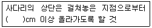
- 30
- 40
- 50
- 60
(정답률: 68%)
118. 다음은 가설통로를 설치하는 경우의 준수사항이다. ( )안에 들어갈 숫자로 옳은 것은?
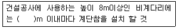
- 7
- 6
- 5
- 4
(정답률: 71%)
119. 건설업 산업안전 보건관리비의 사용내역에 대하여 수급인 또는 자기공사자는 공사 시작 후 몇 개월 마다 1회 이상 발주자 또는 감리원의 확인을 받아야 하는가?
- 3개월
- 4개월
- 5개월
- 6개월
(정답률: 59%)
120. 터널 지보공을 설치한 경우에 수시로 점검하여 이상을 발견 시 즉시 보강하거나 보수해야 할 사항이 아닌 것은?
- 부재의 손상ㆍ변형ㆍ부식ㆍ변위ㆍ탈락의 유무 및 상태
- 부재의 긴압의 정도
- 부재의 접속부 및 교차부의 상태
- 계측기 설치상태
(정답률: 73%)